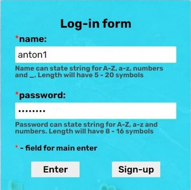

About project
I created this application during EPAM trainings.
I used HTML, CSS (SCSS), BEM, JavaScript (TypeScript), cross-browser and adaptive, Angular. I made the design
In angular i used: directives, pipes, services, guards, interfaces, module, routing, forms (validation), binding, RxJS, components.
For storing data I used: Firebase and LocalStorage
To search for dishes I used API: EDAMAM
Link to repository in GitHub: project "food & cooking"
 Home page.
Home page.
Page dish, empty form.
Page dish, form with selected parameters. From the parameters you can
choose: your ingredients, diet, meal type, dish type, cuisine type, health, random. An unauthorized
user will not be able to view the details of the dish
Authorized users can view the details of the dish. On this page the user
can view information and add or remove a dish from your favorites.
Profile - Info page. Display of information about users, a link to view
favorites and an 'exit' button.
Profile - Favorites page. On this page, the user can view all the dishes
added to the favorites, detailed information and remove the dish from the favorites.
Not found page. If the link is entered incorrectly, the user is
redirected to the not found page.

Log-in page - Log-in form